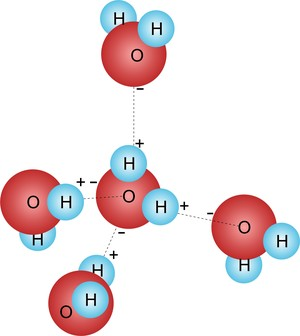

A água é um composto inorgânico, formado por duas moléculas de hidrogênio e uma de oxigênio. Devido ao fato da eletronegatividade do oxigênio ser maior que a do hidrogênio, a água apresenta carga elétrica negativa próxima ao átomo de oxigênio e positiva próxima aos de hidrogênio. Por este motivo, dizemos que a água é um dipolo (composto polar com duas cargas distintas) e possui grande capacidade de interagir entre si e com outras substâncias de cargas opostas, por meio de ligações de hidrogênio. Tais interações conferem grande capacidade de coesão entre as moléculas de água que, na superfície de um lago, formam uma rede denominada tensão superficial. Devido a essa propriedade, dizemos que a água tem a função de solvente universal (só dissolve compostos igualmente polares).
Devido à sua fluidez, a água participa ainda do transporte de substâncias pelo corpo. O plasma sanguíneo tem grande quantidade de água, sendo, portanto, capaz de carregar e excretar os nutrientes nele contidos. Ela é capaz promover regulação térmica. Dado o seu elevado calor específico (1cal/g°C), apresenta grande capacidade de ganhar calor sem alterar seu estado físico, resfriando o corpo quando a temperatura ambiental é alta. A água rouba calor do sangue e o elimina para o meio externo sob a forma de suor (quando a umidade atmosférica é alta) ou vapor d’água (quando em atmosfera seca). Desta forma, a temperatura corporal permanece constante nos animais endotérmicos.
A densidade da água demonstra um padrão anormal em relação às demais substâncias. Sua forma líquida é mais densa que a fase de gelo, configurando assim o que chamamos densidade anômala. Ao formar ligações do hidrogênio na fase sólida, a água expande seu volume e, portanto, diminui sua densidade. Esta característica permite que haja vida subaquática nas regiões mais frias do globo. A superfície congela e a camada de gelo formada isola a água abaixo que permanece líquida.
O teor de água em um organismo pode variar segundo três fatores: a atividade funcional do tecido ou órgão, faixa etária do organismo e estudos envolvendo a espécies.
Os sais minerais são substâncias inorgânicas essenciais para o funcionamento adequado do nosso organismo. Eles estão presentes como eletrólitos nos líquidos corporais, como componentes de enzimas e hormônios e como componentes estruturais de alguns órgãos, tais como ossos e dentina nos dentes.
Os sais minerais são nutrientes que apresentam as mais variadas funções e podem ser observados em seres vivos e também na matéria não viva. Nos seres vivos, encontram-se dissolvidos em água ou imobilizados. Os dissolvidos em água estão sob a forma de íons, enquanto os imobilizados são encontrados nas estruturas esqueléticas, sendo pouco solúveis.
Os sais minerais são elementos que têm sua origem a partir do solo, sendo assim, os seres vivos não podem produzi-los. Para conseguirmos os sais necessários para nossa sobrevivência, uma alimentação adequada e balanceada é essencial. De acordo com a necessidade diária de cada sal mineral, podemos classificá-los em:
Macrominerais: Aqueles cujas necessidades diárias superam os 100 mg. Nesse grupo encontram-se o cálcio, fósforo, sódio, potássio, cloro, magnésio e enxofre
Microminerais: Aqueles que a necessidade diária é inferior a 100 mg. Nesse grupo, podemos destacar o ferro, cobre, zinco, manganês, iodo, selênio e flúor.
Os sais minerais fazem parte dos elementos reguladores e plásticos do nosso organismo, contribuindo para o bom funcionamento do organismo. Na tabela abaixo estão listados os principais sais minerais e sua importância e função.
| Sal mineral | Função | Sua falta provoca | Fontes |
| Cálcio (Ca) | Atua na formação de tecidos, ossos e dentes; age na coagulação do sangue e contração muscular. | Osteoporose, raquitismo, enfraquecimento dos dentes. | Queijo, leite, nozes, uva, cereais integrais, nabo, couve, chicória, feijão, lentilha, amendoim, castanha de caju. |
| Fósforo (P) | Atua na formação de ossos e dentes, ATP e da molécula dos ácidos nucleicos. | Maior probabilidade de ocorrência de fraturas; raquitismo. | Carnes, miúdos, aves, peixes, ovo, leguminosas, queijo, cereais integrais. |
| Ferro (Fe) | Indispensável na formação da hemoglobina, que atua como veiculadora de gases para todo o organismo. | Anemia ferropriva. | Fígado, rim, coração, gema de ovo, leguminosas, verduras, nozes, frutas secas, azeitona. |
| Iodo (I) | É formador dos hormônios da tireoide, T3 e T4. | Bócio endêmico e desordens metabólicas associadas. | Agrião, alcachofra, alface, alho, cebola, cenoura, ervilha, aspargo, rabanete, tomate, peixes, frutos do mar vegetais. |
| Cloro (Cℓ) | Constitui os sucos gástricos (HCℓ). | Deficiência digestiva de proteínas. | Sal de cozinha. |
| Potássio (K) | Atua associado ao sódio, no sistema muscular;contribui para a condução do impulso nervoso. | Diminuição da atividade muscular, inclusive a do coração. | Azeitona verde, ameixa seca, ervilha, figo, lentilha, espinafre, banana, laranja, tomate, carnes, vinagre de maçã, arroz integral. |
| Magnésio (Mg) | Forma a clorofila. | Clorose nos vegetais (perda da cor verde); | Frutas cítricas, leguminosas, gema de ovo, hortaliças, cebola, tomate, mel. |
| Flúor (F) | Forma o esmalte dentes. | Cáries dentárias. | Agrião, alho, aveia, brócolis, beterraba, cebola, couve-flor, maçã, trigo integral. |
| Sódio (Na) | Atua associado ao potássio, no sistema muscular; contribui para a condução do impulso nervoso. | Cãibras, retardamento na cicatrização de feridas e hipotesão. | Sal de cozinha. |